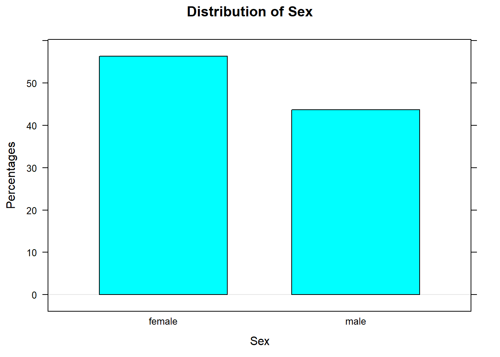
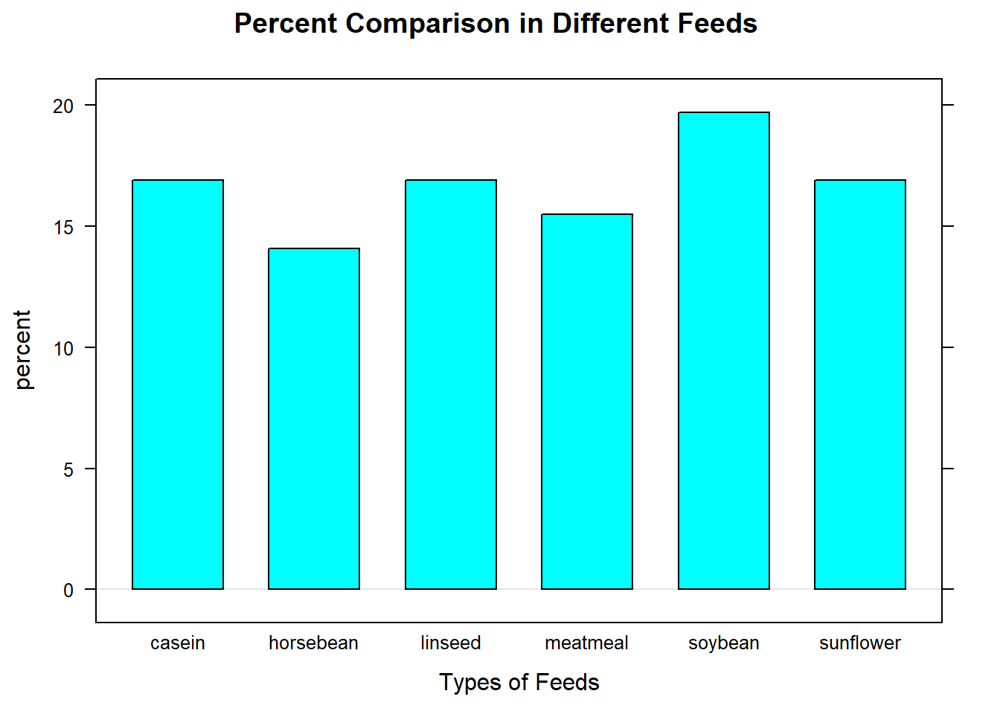

Math 116: Elementary Statistic Using R and R Studio
2019-08-26
Chapter 1 Intruduction
These were my lecture notes used when I taught Math 115 using R and R Studio. Many examples were taken from Elementary Statistics by Mario F. Triola., Prof. Homer White’s website from Geogetown College, and my AP Statistics lecture notes.
1.1 Load these packages before doing anyting
1.2 Need to use the following dataset
<!-- Shortcut for commenting
"Ctrl+Shift+C" for PC "Command+Shift+C" for Mac
-->1.3 View the dataset
1.4 Another way to view the dataset, simply type the name of the dataset
shortcut of inserting R code chucks: Ctrl-Alt-I on PC and Cmd-Option-I on Mac)
## height ideal_ht sleep fastest weight_feel love_first extra_life
## 1 76.00 78.0 9.5 119 1_underweight no yes
## 2 74.00 76.0 7.0 110 2_about_right no yes
## 3 64.00 NA 9.0 85 2_about_right no no
## 4 62.00 65.0 7.0 100 1_underweight no no
## 5 72.00 72.0 8.0 95 1_underweight no yes
## 6 70.80 NA 10.0 100 3_overweight no no
## 7 70.00 72.0 4.0 85 2_about_right no yes
## 8 79.00 76.0 6.0 160 2_about_right no yes
## 9 59.00 61.0 7.0 90 2_about_right no yes
## 10 67.00 67.0 7.0 90 3_overweight no no
## 11 65.00 69.0 6.0 100 2_about_right no no
## 12 62.00 62.0 7.0 60 3_overweight no no
## 13 59.00 62.0 5.0 80 2_about_right yes yes
## 14 78.00 75.0 7.0 80 3_overweight no no
## 15 69.00 72.0 7.0 125 1_underweight no no
## 16 68.00 68.0 4.5 100 1_underweight yes yes
## 17 73.00 77.0 6.0 110 2_about_right yes yes
## 18 73.00 75.0 8.0 120 2_about_right no yes
## 19 65.00 70.0 8.0 120 3_overweight yes yes
## 20 65.00 68.0 7.0 125 3_overweight yes no
## 21 66.00 68.0 7.0 75 3_overweight no no
## 22 67.75 70.0 7.0 90 3_overweight no no
## 23 63.00 67.0 8.5 90 3_overweight no yes
## 24 66.00 66.0 7.0 120 3_overweight yes no
## 25 68.00 68.0 4.0 90 3_overweight yes no
## 26 54.00 54.0 4.0 130 3_overweight yes yes
## 27 74.00 75.0 5.0 119 2_about_right yes yes
## 28 68.00 66.0 4.5 112 2_about_right yes no
## 29 68.00 68.0 6.0 93 2_about_right yes yes
## 30 69.00 67.0 6.0 145 3_overweight no no
## 31 72.00 90.0 9.0 125 3_overweight no yes
## 32 70.50 73.0 7.0 190 2_about_right no yes
## 33 70.00 75.0 7.5 90 2_about_right yes yes
## 34 75.00 78.0 7.0 143 3_overweight yes no
## 35 72.00 75.0 7.0 120 2_about_right yes no
## 36 62.00 62.0 4.5 95 3_overweight no no
## 37 74.00 76.0 5.0 115 3_overweight yes no
## 38 63.00 67.0 7.5 105 3_overweight yes no
## 39 69.00 66.0 6.0 100 3_overweight no no
## 40 60.00 66.0 5.0 95 3_overweight yes no
## 41 68.00 69.5 9.0 95 3_overweight no no
## 42 73.00 76.0 8.0 110 3_overweight no yes
## 43 66.00 68.0 9.0 91 3_overweight yes no
## 44 70.00 67.0 5.5 85 3_overweight yes no
## 45 51.00 54.0 7.0 130 2_about_right no no
## 46 67.00 68.0 7.0 104 3_overweight yes no
## 47 69.00 70.0 5.0 95 3_overweight no no
## 48 71.00 67.0 3.0 105 3_overweight no no
## 49 74.00 74.0 5.0 90 3_overweight no no
## 50 65.00 67.0 6.5 90 2_about_right no yes
## 51 63.50 65.0 6.5 105 2_about_right no no
## 52 66.00 68.0 4.5 95 3_overweight yes yes
## 53 69.00 65.0 8.0 110 3_overweight yes yes
## 54 75.00 77.0 7.0 105 3_overweight no no
## 55 65.00 75.0 6.0 130 2_about_right no yes
## 56 74.00 76.0 7.0 95 2_about_right no yes
## 57 64.00 66.0 6.0 95 3_overweight yes no
## 58 76.00 77.0 7.0 100 2_about_right no yes
## 59 64.00 68.0 6.0 110 3_overweight no yes
## 60 71.50 74.0 6.0 108 2_about_right no no
## 61 63.00 68.0 7.5 75 3_overweight no no
## 62 64.00 68.0 7.5 102 3_overweight no no
## 63 68.00 72.0 6.5 105 3_overweight no yes
## 64 70.00 72.0 4.0 98 1_underweight yes yes
## 65 68.00 72.0 4.0 135 1_underweight no yes
## 66 75.00 75.0 6.0 130 2_about_right no yes
## 67 69.00 67.0 2.0 85 3_overweight yes no
## 68 70.00 72.0 5.0 85 1_underweight no no
## 69 61.00 68.0 5.0 130 2_about_right no no
## 70 65.00 66.0 8.0 120 2_about_right yes no
## 71 70.00 73.0 5.0 110 1_underweight no no
## seat GPA enough_Sleep sex diff.ideal.act.
## 1 1_front 3.560 no male 2.00
## 2 2_middle 2.500 no male 2.00
## 3 2_middle 3.800 no female NA
## 4 1_front 3.500 no female 3.00
## 5 3_back 3.200 no male 0.00
## 6 1_front 3.100 yes male NA
## 7 1_front 3.680 no male 2.00
## 8 3_back 2.700 yes male -3.00
## 9 3_back 2.800 no female 2.00
## 10 2_middle NA yes female 0.00
## 11 1_front 2.100 yes female 4.00
## 12 1_front 2.500 yes female 0.00
## 13 1_front 3.890 no female 3.00
## 14 2_middle 3.200 yes female -3.00
## 15 2_middle 3.200 no male 3.00
## 16 2_middle 2.200 no male 0.00
## 17 3_back 3.500 no male 4.00
## 18 2_middle 3.550 yes male 2.00
## 19 1_front 3.750 yes female 5.00
## 20 3_back 3.500 no female 3.00
## 21 1_front 3.400 yes female 2.00
## 22 1_front 2.770 no male 2.25
## 23 1_front 3.000 yes female 4.00
## 24 1_front 3.167 yes female 0.00
## 25 2_middle 3.200 no female 0.00
## 26 1_front 3.413 no female 0.00
## 27 1_front 3.700 no male 1.00
## 28 1_front 3.500 no female -2.00
## 29 1_front 3.750 no female 0.00
## 30 3_back 2.800 no female -2.00
## 31 3_back 2.200 no male 18.00
## 32 3_back 3.600 no male 2.50
## 33 2_middle 2.800 yes male 5.00
## 34 2_middle 3.100 yes male 3.00
## 35 2_middle 3.000 no male 3.00
## 36 2_middle 3.500 no female 0.00
## 37 1_front 3.900 no male 2.00
## 38 1_front 3.787 yes female 4.00
## 39 2_middle 3.200 no female -3.00
## 40 2_middle 3.700 no female 6.00
## 41 2_middle 2.000 yes female 1.50
## 42 2_middle 3.100 yes male 3.00
## 43 1_front 3.500 no female 2.00
## 44 2_middle 3.700 no female -3.00
## 45 1_front 2.550 no female 3.00
## 46 2_middle 3.730 no female 1.00
## 47 2_middle 3.500 no female 1.00
## 48 2_middle 3.200 no female -4.00
## 49 2_middle 3.100 no male 0.00
## 50 2_middle 3.900 yes female 2.00
## 51 2_middle 3.250 no female 1.50
## 52 2_middle 3.200 no female 2.00
## 53 3_back 3.294 no female -4.00
## 54 2_middle 2.000 yes male 2.00
## 55 1_front 3.000 no male 10.00
## 56 3_back 3.700 yes male 2.00
## 57 1_front 3.300 no female 2.00
## 58 2_middle 3.200 yes male 1.00
## 59 2_middle 3.600 yes female 4.00
## 60 2_middle 3.300 no male 2.50
## 61 1_front 4.000 yes female 5.00
## 62 1_front 3.400 no female 4.00
## 63 2_middle 2.700 yes male 4.00
## 64 3_back 2.900 no male 2.00
## 65 2_middle 1.900 no male 4.00
## 66 2_middle 2.800 yes male 0.00
## 67 1_front 3.500 no female -2.00
## 68 2_middle 3.300 no male 2.00
## 69 1_front 3.700 no female 7.00
## 70 3_back 2.914 yes female 1.00
## 71 1_front 2.700 no male 3.001.5 The first 5 observations of a dataset
## height ideal_ht sleep fastest weight_feel love_first extra_life
## 1 76.0 78 9.5 119 1_underweight no yes
## 2 74.0 76 7.0 110 2_about_right no yes
## 3 64.0 NA 9.0 85 2_about_right no no
## 4 62.0 65 7.0 100 1_underweight no no
## 5 72.0 72 8.0 95 1_underweight no yes
## 6 70.8 NA 10.0 100 3_overweight no no
## seat GPA enough_Sleep sex diff.ideal.act.
## 1 1_front 3.56 no male 2
## 2 2_middle 2.50 no male 2
## 3 2_middle 3.80 no female NA
## 4 1_front 3.50 no female 3
## 5 3_back 3.20 no male 0
## 6 1_front 3.10 yes male NA1.6 The last 5 observations of a dataset
## height ideal_ht sleep fastest weight_feel love_first extra_life
## 66 75 75 6 130 2_about_right no yes
## 67 69 67 2 85 3_overweight yes no
## 68 70 72 5 85 1_underweight no no
## 69 61 68 5 130 2_about_right no no
## 70 65 66 8 120 2_about_right yes no
## 71 70 73 5 110 1_underweight no no
## seat GPA enough_Sleep sex diff.ideal.act.
## 66 2_middle 2.800 yes male 0
## 67 1_front 3.500 no female -2
## 68 2_middle 3.300 no male 2
## 69 1_front 3.700 no female 7
## 70 3_back 2.914 yes female 1
## 71 1_front 2.700 no male 31.7 Random 5 observations
## height ideal_ht sleep fastest weight_feel love_first extra_life
## 40 60 66 5.0 95 3_overweight yes no
## 36 62 62 4.5 95 3_overweight no no
## 16 68 68 4.5 100 1_underweight yes yes
## 61 63 68 7.5 75 3_overweight no no
## 11 65 69 6.0 100 2_about_right no no
## seat GPA enough_Sleep sex diff.ideal.act.
## 40 2_middle 3.7 no female 6
## 36 2_middle 3.5 no female 0
## 16 2_middle 2.2 no male 0
## 61 1_front 4.0 yes female 5
## 11 1_front 2.1 yes female 41.8 Structure of a dataset
## 'data.frame': 71 obs. of 12 variables:
## $ height : num 76 74 64 62 72 70.8 70 79 59 67 ...
## $ ideal_ht : num 78 76 NA 65 72 NA 72 76 61 67 ...
## $ sleep : num 9.5 7 9 7 8 10 4 6 7 7 ...
## $ fastest : int 119 110 85 100 95 100 85 160 90 90 ...
## $ weight_feel : Factor w/ 3 levels "1_underweight",..: 1 2 2 1 1 3 2 2 2 3 ...
## $ love_first : Factor w/ 2 levels "no","yes": 1 1 1 1 1 1 1 1 1 1 ...
## $ extra_life : Factor w/ 2 levels "no","yes": 2 2 1 1 2 1 2 2 2 1 ...
## $ seat : Factor w/ 3 levels "1_front","2_middle",..: 1 2 2 1 3 1 1 3 3 2 ...
## $ GPA : num 3.56 2.5 3.8 3.5 3.2 3.1 3.68 2.7 2.8 NA ...
## $ enough_Sleep : Factor w/ 2 levels "no","yes": 1 1 1 1 1 2 1 2 1 2 ...
## $ sex : Factor w/ 2 levels "female","male": 2 2 1 1 2 2 2 2 1 1 ...
## $ diff.ideal.act.: num 2 2 NA 3 0 NA 2 -3 2 0 ...1.9 Discriptive Statistics
1.9.1 Tally the sexes (a table of counts):
## sex
## female male
## 40 311.9.3 Get percentages:
##
## sex female male Total
## 56.34 43.66 1001.9.4 Barcharts
barchartGC(~sex,data=m111survey,
type="percent",
main="Distribution of Sex", xlab="Sex", ylab="Percentages")
1.9.5 contingency table
## seat
## sex 1_front 2_middle 3_back
## female 19 16 5
## male 8 16 71.9.6 Another way
##
## 1_front 2_middle 3_back
## female 19 16 5
## male 8 16 71.9.7 Row Percents
## seat
## sex 1_front 2_middle 3_back Total
## female 47.50 40.00 12.50 100.00
## male 25.81 51.61 22.58 100.001.9.8 Barcharts to compare
1.9.9 Describing a Numerical Variable
## min Q1 median Q3 max mean sd n missing
## 60 90.5 102 119.5 190 105.9014 20.8773 71 01.9.10 or anther way
## Min. 1st Qu. Median Mean 3rd Qu. Max.
## 60.0 90.5 102.0 105.9 119.5 190.01.10 Describing the Center: The Mean
sample mean \[\bar{x}=\frac{\sum x_i}{n}\] where n is the sample size
1.11 Population mean
\[\mu=\frac{\sum x_i}{n}\]
1.13 Weighted Mean
When data values are assigned different weights, \(w\), we can compute a weighted mean. \[\bar{x}=\frac{\sum{(w\cdot x)}}{\sum{w}}\] In her first semester of college, a student of the author took five courses. Her final grades along with the number of credits for each course were A (3 credits), A (4 credits), B (3 credits), C (3 credits), and F (1 credit). The grading system assigns quality points to letter grades as follows: A = 4; B = 3; C = 2; D = 1; F = 0. Compute her grade point average.
1.14 Describing the Spread: the SD
1.14.1 Standard deviation (SD) measures how far the typical data value is from the mean of all the data. –>
1.14.2 Sample Standard Deviation
\[s=\sqrt{\frac{\sum (x_i-\bar{x})^2}{n-1}}\]
1.14.3 Population stardar deviation
\[\sigma=\sqrt{\frac{\sum (x_i-\mu)^2}{n}}\]
1.16 Quantiles
1.16.1 Also called percentiles.
with(m111survey,
quantile(fastest,
probs=c(0.2,0.5,0.8,0.9))) # you can change any decimal if you want. i.e 0.4 means 40% percentile## 20% 50% 80% 90%
## 90 102 120 1301.16.2 Quartiles
## 25% 50% 75%
## 90.5 102.0 119.51.16.3 Inverting a Quantile
Given an observation x from your data, you want to know its corresponding quantile, that is, you want to know what fraction of the data is less than x
## [1] 0.40845071.17 Describing Shapes

1.17.2 Relative frequency histogram
1.17.3 Making a Density Histogram

1.17.4 Making a Density Plot
1.18 Boxplots
ImaginaryData <- c(7.1,7.3,7.5,8.2,8.5,9.1,9.5,
9.8,9,9,9.9,10,10.5,11)
bwplot(~ImaginaryData,xlab="x",
main="Example Boxplot")
1.19 Another way
1.20 Boxplot Detect Outliers

## $stats
## [1] 59.00 65.00 68.00 71.75 79.00
##
## $n
## [1] 71
##
## $conf
## [1] 66.7343 69.2657
##
## $out
## [1] 54 511.21 Compare distributions
## sex min Q1 median Q3 max mean sd n missing
## 1 female 60 90 95 110.0 145 100.0500 17.60966 40 0
## 2 male 85 99 110 122.5 190 113.4516 22.56818 31 01.22 z-scores
\[z=\frac{x-\bar{x}}{s}\] Question: Suppose that Linda is 72 inches tall. How does she compare with the other GC students in the m111survey data?
Solution: Get her z-score.
## min Q1 median Q3 max mean sd n missing
## 51 65 68 71.75 79 67.98662 5.296414 71 0Question: Is Linda unusually tall, for a female? Which means does her height fall with 2 stander deviations about the mean? If yes, then her height is normal. If not, then her height is unusually tall (or short).
## sex min Q1 median Q3 max mean sd n missing
## 1 female 51 63 65 68 78 64.93750 4.621837 40 0
## 2 male 65 70 72 74 79 71.92097 3.048545 31 01.23 Let’s Practice.
R has some embedded datasets. Let’s use the dataset chickwts
1.23.1 Load the dataset
1.23.3 Data Structure
## 'data.frame': 71 obs. of 2 variables:
## $ weight: num 179 160 136 227 217 168 108 124 143 140 ...
## $ feed : Factor w/ 6 levels "casein","horsebean",..: 2 2 2 2 2 2 2 2 2 2 ...1.23.4 How many differnt types of feed?
##
## casein horsebean linseed meatmeal soybean sunflower
## 12 10 12 11 14 121.23.5 Percentages?
##
## feed casein horsebean linseed meatmeal soybean sunflower Total
## 16.9 14.08 16.9 15.49 19.72 16.9 1001.23.6 Get a bar charts for the numbers of different feeds
barchartGC(~feed,data=chickwts,
type="percent",
main="Percent Comparison in Different Feeds ", xlab="Types of Feeds")